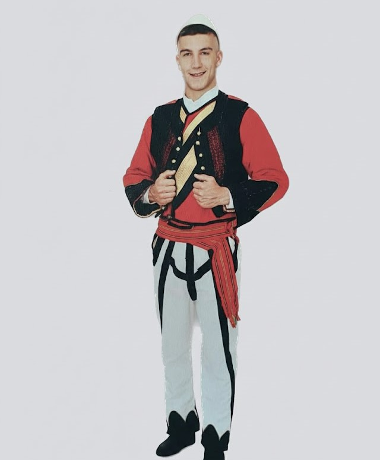

Veshja Tradicionale e Burrave të Ulqinit
Veshja e burrave të Ulqinit reflekton jetën bregdetare dhe ndikimet urbane. Kostumi dallon për karakterin e tij të lehtë dhe elegant, duke pasqyruar ndarjen mes stilit malor të brendshëm dhe stilit qytetar portual.
Stili Bregdetar/Portual shquhet për të qenë i lehtë, funksional dhe elegant, i përshtatur për klimën e ngrohtë dhe aktivitetet tregtare.
Karakteristikat Kryesore
- Stili Portual: Kostumi i lehtë dhe funksional, i përshtatur për klimën bregdetare.
- Diferencimi Fshat-Qytet: Përdorimi i potureve të errëta (qytet) dhe i tirqve të bardhë (fshat).
- Ngjyrat: Kontrasti i bardhë (këmisha/tirqet) dhe i zi/errët (poturet/jeleku).
- Plisi: Shpesh më i lehtë dhe i thjeshtë.
Elementet Kryesore dhe Variacionet Stilistike
Elementet Themelore
- Këmisha: E bardhë ose ngjyrë e hapur, prej pambuku ose liri. Mëngët e gjera.
- Jeleku dhe Xhamadani: Jelek i zi ose i errët, me prerje elegante dhe qëndisma diskrete. Xhamadani (i errët) përdoret në raste solemne, me stil të matur dhe urban.
- Brezi: I mesëm ose i ngushtë, zakonisht i kuq, i zi ose me shirita, i lidhur rreth belit.
Pantallonat Tradicionale (Variacioni)
Visheshin dy variante kryesore, në varësi të zonës:
Tirqet: Të bardha ose ngjyrë natyrale, me dekor minimal. Veshja e zonave fshatare dhe malore.
Poturet (Dimijat): Pantallona të gjata, të gjera dhe me pala. Kjo ishte veshja tipike e burrave të Ulqinit qytetar dhe tregtar, shpesh të punuara me shajak të zi ose blu të errët.
Poturet (Dimijat): Pantallona të gjata, të gjera dhe me pala. Kjo ishte veshja tipike e burrave të Ulqinit qytetar dhe tregtar, shpesh të punuara me shajak të zi ose blu të errët.
Aksesorët dhe Këpucët
- Plisi (Qeleshi): Plisi i bardhë, më i lehtë dhe i thjeshtë, ose lloje të tjera kapelash të lehta.
- Opingat dhe Këpucët: Opingat prej lëkure. Në qytet shpesh përdorej këpucë lëkure me stil urban.